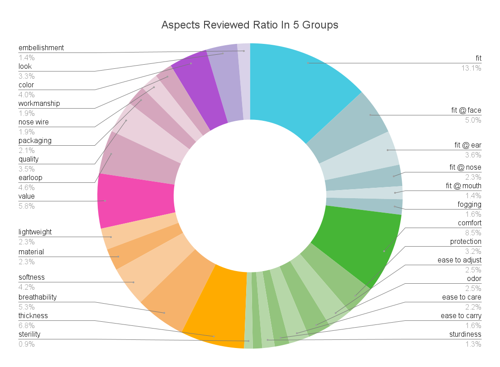
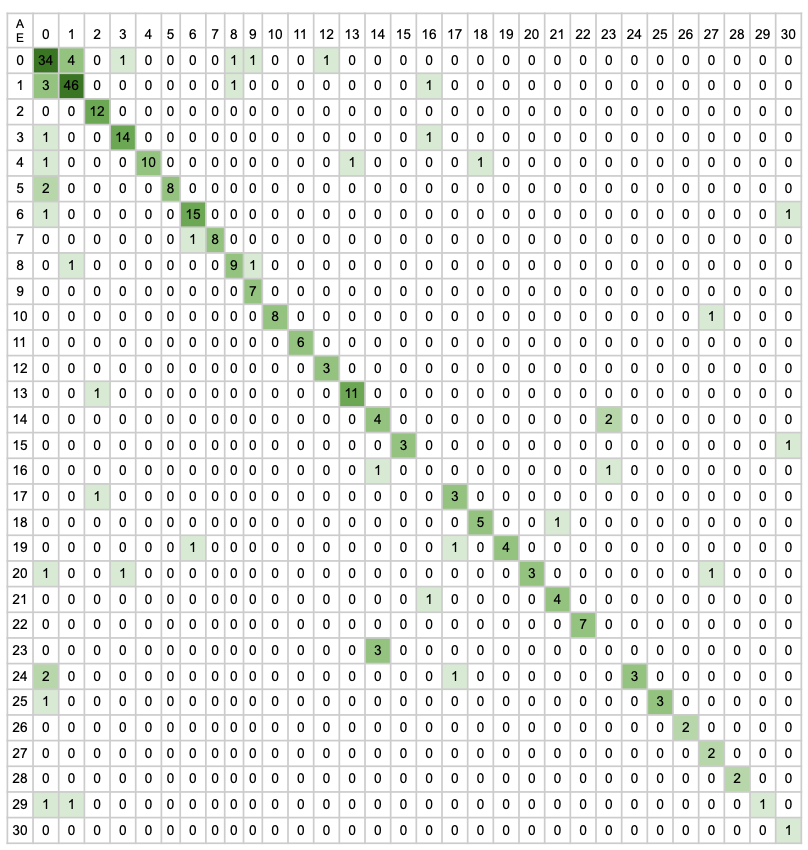
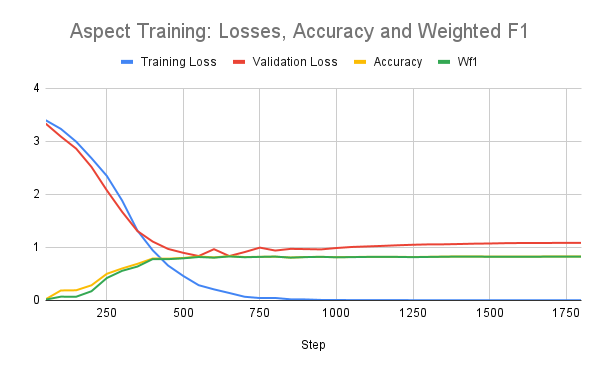

Consumer Studies


⋅⋅⋅⋅⋅⋅⋅⋅⋅⋅⋅⋅⋅⋅⋅⋅⋅⋅
Social Studies


⋅⋅⋅⋅⋅⋅⋅⋅⋅⋅⋅⋅⋅⋅⋅⋅⋅⋅
⋅⋅⋅⋅⋅⋅⋅⋅⋅⋅⋅⋅⋅⋅⋅⋅⋅⋅
⋅⋅⋅⋅⋅⋅⋅⋅⋅⋅⋅⋅⋅⋅⋅⋅⋅⋅
2021
1000+ Amazon ASINs
70K+ review documents
scraped in July 2021
product aspects
sentiments
~400K text units
R
Python
RSelenium
PyTorch
Huggingface
Nympy
sklearn
BERT
Snippext
It is not that easy to answer. Even for a simple product like a face mask, it has multiple dimensions to be thoroughly articulated by individual users. SweetSpotter, a Machine Learning-powered NLP (Natural Language Processing) pipeline, was built to answer exactly that question after sifting through 70K+ reviews on Amazon.
As the pie chart shows in five color coded categories, the elements that go into a face mask based on the collective user experience are ranked in the below ratio:
⦿ construction (in blue): 27%
⦿ user experience (in green): 24%
⦿ material (in yellow): 21%
⦿ manufacturing (in pink): 20%
⦿ look (in purple): 8%
For the product enginners and manufacturs, the finer cuts of each subcategory are the design optimization intelligence for allocating limited design and manufacturing resources to the most valued features of a face mask so that the next iteration of this product approaches the "ideal mask" in the best possible way. In a pandemic, the look of a mask was the least concern. Fitting became the biggest issue, because all of a sudden, faces in all shapes and sizes were covered in masks, when existing masks had been designed only for a tiny subset of the population.
SweetSpotter takes in a review text document like the above and cuts it into minimum semantic units, which are very likely containing only one product attribute or issue of concern. When the text units are relatively "pure" in the topic, the Machine can be trained more effectively to classify them into the right categories. After several rounds of labeling and relabeling, I curated attribute (aka aspect) categories into 31 classes, from non-product or general product to specific feature on a mask with more granular subcategories, like "fit @ face", "fit @ nose", "fit @ ears", and "fit @ mouth".
Training the Machine to read texts like I would classify them was the easier part. Labeling the dataset was a lot more demanding on the conceptualization of what goes into the engineering of a face mask. I could confidently classify fit into different areas on the face because I used to attend fitting sessions on snug-fitting wearable products to know what to watch out. Dataset labeling is a domain dependent task. The Language Model bert-base-uncased achieved 2021 state-of-the-art accuracy (83% for 31-attributes and 91% for 3-sentiments classification) with a small training dataset (1200+), thanks to such carefully labeled training dataset.
This confusion matrix shows how accurate the classifier became on the 31-attributes classes after fine-tuning with the training dataset. Values on the diagonal line are correctly classified. Values off that are misclassified.
SweetSpotter pipeline consists of four "C" steps:
⦿ Collector: web scraper in RSelenium collected all product listings under the search keyword "face mask" and then scraped till the last review on the last page on each of the deduplicated products based on ASIN - the unique product ID on Amazon.
⦿ Cutter: human language is messy, with spelling errors, repetitions, ramblings, or mixed messages. The Cutter chopped up the review document into digestible bites for the Machine, reducing the chances of having multiple categories in one text unit.
⦿ Classifier: pre-trained transformer bert-base-uncased performed the best for the classification task and the dataset size in comparison to other bert transformers or tagging-based NLP pipeline Snippext. Huggingface and Google Colab are great open source platforms to train a transformer.
⦿ Compiler: after aspect-sentiment classification over ~400K text units was assembled into one database, normalizing each attribute and sentiment against the total gives a directly comparable sense of scale of how important and (dis)liked each product feature is for users collectively.
The above graph shows how performance metrics, accuracy and weighted F1 score, trended over the steps during the training process of the aspect classifier. After around 1000 steps, both metrics are hovering above 80%.

Odor was mentioned ~6000 times in the ~400K review units and ~5000 was negative about it. This is very much understandable, because people were wearing masks air-tight over their noses, often for hours straight. Any product odor, either from material, manufacturing, shipping or storing, can be "right under your nose" and irritating. With this knowledge, the manufacturers and sellers of face masks can run a diagnostic to find the odor source and remove it. It could be an easy fix, but a big boost to their Amazon star rating.
This is what SweetSpotter can do: find the sweet spots to improve on a product by accurately targeting the most painfully felt but effectively fixable features informed by the design intelligence distilled from massive consumer reviews.